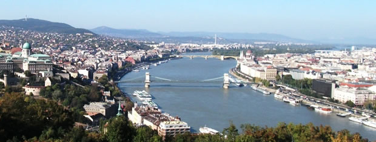
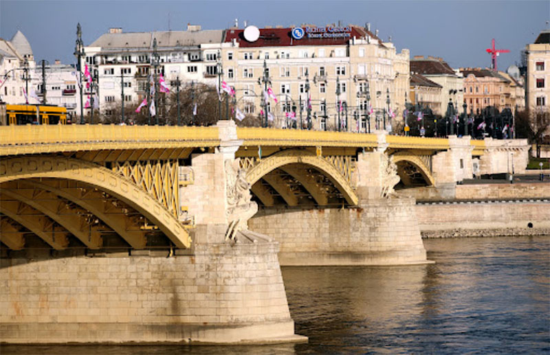
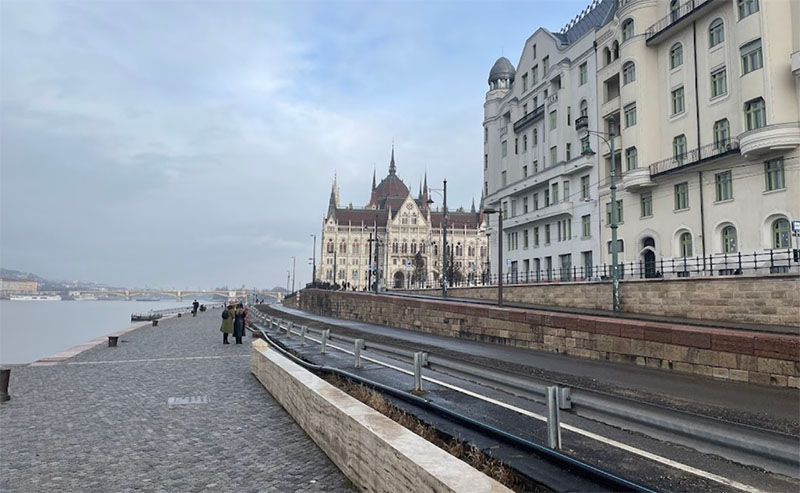
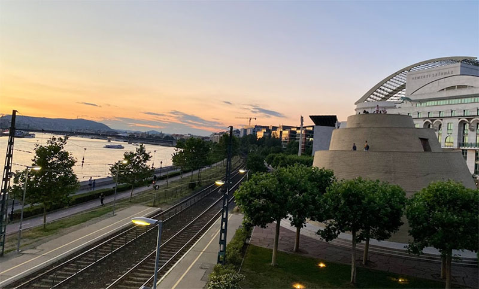

Route #1 - Pest Tour
A short walk through the major sites of Pest.
Heading with major waypoints of the route.
- Duration: how much time
- Length: how many kilometers
- Starting point: Margit híd
- Ending point: Lágymányosi híd
Starting Point: Margit Híd
A long description what we will see at this waypoint

Waypoint #1: Dunapart
A long description what we will see at this waypoint

Ending Point: Lágymányosi Híd
A long description what we will see at this waypoint
